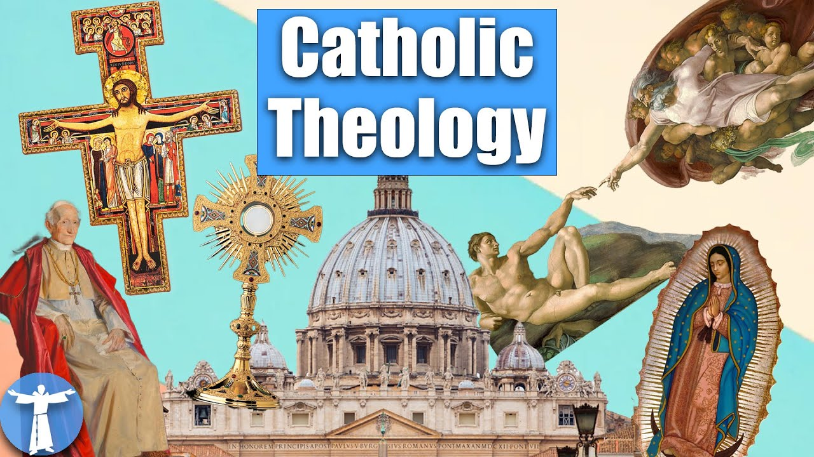

来B站一起耍【Global每日英语简报】
【十分钟了解天主教（几乎）一切】
Summary: This video provides a concise overview of Catholicism, covering core beliefs, sacraments, Church authority, and moral teachings in just 10 minutes.
摘要： 本视频用十分钟简要概述天主教的核心信仰、圣事、教会权威和道德教导。

⏱️ Estimated Reading Time: 17 min
So there’s something about the Catholic Church that interests you but you’re not sure about the whole picture.
你对天主教会有兴趣，但对全貌不太确定。
And let’s be honest, it’s a big, complicated, sometimes controversial picture.
坦白说，这是一个庞大、复杂且有时充满争议的图景。
Before you jump into an intensive 9 month course at your parish, you might want a bird’s eye view of everything involved.
在你参加堂区为期九个月的密集课程前，你可能想先了解全局。
What do Catholics believe and what does it mean to be Catholic?
天主教徒信仰什么？成为天主教徒意味着什么？
This is everything you need to know in 10 minutes.
这是你十分钟内需要了解的一切。
Catholics are Christians.
天主教徒是基督徒。
While this may be a contested point among certain types of fundamentalist Protestants, the fact of the matter is that our entire faith is about living and professing the Gospel.
尽管某些基要派新教徒可能对此有争议，但事实上，我们的全部信仰关乎活出并宣认福音。
Something we’ve been doing for… 2000 years.
这是我们两千年来一直在做的事。
If you’re already a Christian, all of the normal things apply—belief in the Trinity; the Incarnation; the death and resurrection of Jesus.
如果你已是基督徒，所有基本教义都适用——信仰三位一体、道成肉身、耶稣的死亡与复活。
These are things that we all have in common and so you can probably skip to the next section.
这些是我们共有的信仰，所以你可以跳到下一部分。
If you’re not yet a Christian, we believe in a God that is one essence but three persons, called a Trinity.
若你尚未信主，我们信仰一位一体三位格的上帝，即三位一体。
The second person of the Trinity was born of a woman, being fully God and fully human.
三位一体的第二位由女人所生，既是完全的神，也是完全的人。
He preached about forgiveness and sacrifice, and then showed what that looked like by dying himself, but after a few days he rose from the dead, conquering death and taking away our sins, ascended to heaven, and gave us the Holy Spirit so that we would always have God with us.
他宣讲宽恕与牺牲，并以自己的死亡展现其意义，三日后复活，战胜死亡、赦免我们的罪，升天后赐下圣神，使我们常与上帝同在。
Which, is a way too fast way of describing any one of those concepts, but with each section I’ll link a video for a deeper dive here.
这些概念的描述过于简略，但每一部分我都会附上视频链接以供深入探讨。
While all Christians agree on these basic points, we do not always agree on the significance of these events or what we’re supposed to do with them.
尽管基督徒在这些基本点上一致，但对这些事件的意义或应对方式常有分歧。
One big difference is how we approach worship.
一大区别在于我们如何敬拜。
For Catholics, Orthodox Christians, and some Protestants, there is a strong sacramental theology.
对天主教徒、东正教徒和部分新教徒而言，圣事神学至关重要。
Basically, God does not only speak to us from on high and our worship is more than intellectual or moral.
简言之，上帝不仅从高处向我们说话，我们的敬拜也不仅是理智或道德的。
God is intimately and consistently present in and through all of creation, transforming physical things so that his presence can be seen and felt.
上帝亲密且持续地临在于万物中，转化物质，使人能看见并感受到他的临在。
These events are called sacraments, and there are seven of them.
这些仪式称为圣事，共有七件。
The sacraments of initiation consist of baptism, confirmation, and eucharist, three events that draw us closer to God.
入门圣事包括洗礼、坚振和圣体，这三件圣事使我们更亲近上帝。
In baptism, water is used to wash away our sins and we are marked with the sign of Christ, incorporating us into his community.
洗礼中，水洗净我们的罪，我们被印上基督的标记，加入他的团体。
In confirmation, our baptism is sealed with an anointing of oil, confirming in us the gifts of the Holy Spirit.
坚振时，以油傅抹封印洗礼，确认我们领受圣神的恩赐。
And in Eucharist, through a process called Transubstantiation, the Holy Spirit transforms ordinary bread and wine into the Body and Blood of Christ so that we may consume him and become one with him.
圣体中，通过“实体转变”，圣神将普通饼酒变为基督的体血，使我们领受后与他合一。
This last one is the height of our worship because we do not believe that it is a mere symbol, nor do we believe that we are re-sacrificing Christ again.
圣体是我们敬拜的巅峰，因我们不信这只是象征，也不信我们是在重复献祭基督。
We participate in the once for all sacrifice he made on calvary.
我们参与他在加尔瓦略山一次而永远的牺牲。
We know that life often involves pain and suffering, and so there are the sacraments of healing—reconciliation and anointing of the sick.
我们知道生命常伴随痛苦，因此有治愈圣事——告解与病人傅油。
Jesus gave his disciples the ability to forgive sins, and so Catholics confess their sins to priests who have the ability to offer absolution.
耶稣赋予门徒赦罪权柄，故天主教徒向有赦罪权的司铎告明罪行。
Similarly, in the letter of St. James, the apostle exhorts the faithful to bring the sick to the priests who will pray over them and forgive their sins.
同样，圣雅各伯书信中，宗徒劝信徒请司铎为病人祈祷并赦罪。
We could do both of these thing alone, but Jesus wanted us to have visible signs of the grace we were receiving.
我们本可独自完成这些，但耶稣愿我们以有形标记领受恩宠。
Finally, there are the sacraments at the service of communion, namely, marriage and holy orders.
最后是为共融服务的圣事——婚姻与圣秩。
Often called vocational sacraments, they both effect a formal covenant with God, committing one’s life to a particular mission, whether that be marriage or ordination, providing the grace to fulfill the responsibilities of each.
常称“圣召圣事”，二者立定与上帝的正式盟约，使人投身婚姻或圣秩的使命，并提供履行责任的恩宠。
What connects each of these rituals is the idea that God’s presence is tangible and transformative, and that we are to worship in communion with others.
这些仪式的共同点是：上帝的临在是具体且转化的，我们应在共融中敬拜。
Communion here on earth, of course, but also communion with those who have gone before us and now live in heaven.
不仅是现世的共融，也包括与先我们而去、现居天堂者的共融。
As Catholics, we look to the saints, holy men and women in heaven, to offer us examples to follow but also to intercede for us.
作为天主教徒，我们仰望天堂的圣人男女，以他们为榜样，并请他们代祷。
We ask the living Church on earth to pray for us, why wouldn’t we ask the living Church in heaven to do the same?
我们既请地上活着的教会代祷，为何不请天上活着的教会同样代祷？
Chief among these saints for Catholics is the mother of Jesus herself, Mary.
天主教最尊崇的圣人是耶稣的母亲玛利亚。
We believe that she was conceived without sin, lived a sinless life of faith, and so never died but was assumed into heaven.
我们信她始胎无玷、一生无罪、未经历死亡即被提升天。
She is a part of the created order in need of God’s redemption, just like any of us, so we do not worship her, but we do honor her for all that she has done.
她同属需救赎的受造界，故我们不崇拜她，但尊崇她的一切作为。
Of course, we are not in heaven yet, so while they can intercede for us, there must still be an organized authority here on earth, which is why we have the Church.
当然，我们尚未升天，故需地上有组织的权威——即教会。
Unlike some Christians that insist on the Bible alone, the Catholic Church is guided by three sources: Tradition, the Bible, and the living magisterium.
与某些“唯独圣经”的基督徒不同，天主教会的三大指引是：传承、圣经和活生生的训导权。
The reason for this, and why Tradition come first, is because there was a long time before the Bible was written.
传承居首，因圣经成书前教会已存在许久。
What guided the Church in the first decades and centuries was not a book but the living authority, passed down from generation to generation, of witnesses who had seen God.
早期教会数十年乃至数世纪的指引并非书籍，而是见证上帝者的活权威的代代相传。
Tradition, in this sense, is a foundational spirit that defines who we are and what we do.
传承是定义我们身份与行动的基础精神。
You can think of it like the United States—we have a foundational Tradition of life, liberty, and the pursuit of happiness.
可类比美国——我们有生命、自由与追求幸福的基础传统。
These will never change and everything we do is interpreted through this lens.
这些永不变，我们的一切行动皆由此诠释。
It is this Tradition, this legitimate authority, that helped the early Church decide what should even be in the Bible.
正是这传承与合法权威，协助早期教会确定圣经内容。
And it is this Tradition, this legitimate authority, that handed down Christ’s authority to the magisterium, allowing the Church to make decisions today.
也是这传承与合法权威，将基督的权柄传递给训导权，使教会能今日作决定。
Jesus said to Peter, “You are Peter and upon this Rock I will build my Church.”
耶稣对伯多禄说：“你是伯多禄（磐石），在这磐石上，我要建立我的教会。”
He breathed his Spirit into the disciples in the upper room and gave them authority to bind on earth and in heaven.
他在晚餐厅向门徒嘘气，赐予他们在地上和天上束缚的权柄。
The ministers of the Catholic Church—bishop, priest, and deacon—find their origins in Tradition and the Bible itself, not simply as temporary jobs among the faithful, but as people who are specially called and blessed with God’s spirit to lead the Church in prayer and mission.
天主教会的圣职人员——主教、司铎、执事——源于传承与圣经，不仅是信徒中的临时职务，更是蒙特殊召叫、获圣神祝福以领导教会祈祷与使命的人。
For this reason, the Church is not merely a human institution that never changes, but one with a living authority to grow and adapt with the world.
因此，教会非僵化的人为机构，而是有活权威、能与世界共同成长的团体。
What it proclaims it does so, not from opinion, but from the authority of God that guides it.
其宣信非出于意见，而是出于指引它的上帝权威。
There are various levels of authority with the Church, from dogmas, which are divinely revealed and do not change, Definitive Doctrines, that explain and safeguard the faith, Authoritative Doctrines, reflections on scripture in light of the contemporary world, and Disciplines, fitting ways to live out the faith.
教会权威分多级：神启且不变的教义、解释与护卫信仰的确定道理、结合当代世界的圣经诠释权威教导，以及践行信仰的恰当纪律。
These teachings may come from the pope himself or an ecumenical council, of which there have been 21 in our history.
这些教导可能来自教宗或大公会议——历史上共21次。
Despite the popular misunderstanding, the pope is not infallible, but under certain circumstances, just like the writers of Scripture, may be kept from error.
尽管常被误解，教宗并非永无谬误，但在特定情形下——如圣经作者——可免受错误。
Ultimately the goal of every Christian is to be saved from sin and death, living forever in heaven.
最终，每位基督徒的目标是从罪恶与死亡中得救，永居天堂。
For Catholics, this is a twofold process.
对天主教徒，这是双重过程。
We are justified by Christ alone.
我们唯独因基督成义。
As sinners, we deserve death and so cannot merit our justification.
作为罪人，我们本该死，故无法赚取成义。
It is through the faith of Christ and his sacrifice on the cross, freely given gifts, that we are saved.
我们得救，是借着基督的信仰与十字架牺牲——这白赐的恩典。
For this reason, all we need to be justified is to confess our faith in him.
因此，成义只需宣认对他的信仰。
But justification is only part of the process.
但成义仅是过程的一部分。
If we want to be fitting enough for heaven, we must also grow in sanctification, a process of becoming more like God.
若要配得天堂，还须在圣化中成长——即肖似上帝的过程。
This requires that we put faith into practice, grow in virtue, and participate in the grace of God in such a way that we become one with it.
这要求我们将信仰实践、培养德行、参与恩宠，直至与之合一。
Jesus pays the insurmountable price for the ticket, but we still have to show up to the station and get on the train ourselves.
耶稣已付车票的至高代价，但我们仍需亲自到站上车。
We do this by living a moral life, both privately and communally, as Christ showed us.
我们按基督的示范，在个人与团体中活出道德生活。
For Catholics there are a number of important principles that guide us.
天主教徒遵循若干重要原则。
Such as, the inherent dignity of every person.
例如：人人固有的尊严。
We believe that everyone is created in the image and likeness of God and so bears undeniable worth.
我们信众人按上帝肖像受造，故拥有不可否认的价值。
We protect life from conception to natural death and stand against undue pain and suffering in the world.
我们保护从受孕到自然死亡的生命，反对世间不当的痛苦。
This may involve works of charity—feeding the hungry and caring for the sick—but also works of justice—ensuring fair labor laws and standing against racism.
这包括慈善——喂养饥者、照顾病患——也包括正义——确保公平劳动法、反对种族主义。
Catholic Social teaching requires that we care not only for our own life and dignity but that of the whole world.
天主教社会训导要求我们不仅关心自身生命与尊严，还有整个世界的。
And not just the bodies of the whole world, but their souls as well.
不仅是全世界的身体，还有灵魂。
As Catholics, we take to heart Jesus’ words to make disciples of all nations, that we do not live on bread alone but by every word that comes from the mouth of God.
作为天主教徒，我们铭记耶稣“使万民成为门徒”的教导，并“生活不只靠饼，也靠上帝口中所发的一切言语”。
Spreading the Good News is imperative to our faith.
传播福音是我们信仰的要务。
Phew. That’s a lot already and we’re running out of time.
呼，内容已很多，时间所剩无几。
Let’s finish with a rapid round.
最后快速总结几点。
For those justified but not yet fully sanctified, there is purgatory, a place for the elect that are not purified to enter heaven.
对已成义但未完全圣化者，有炼狱——选民净化以进入天堂之处。
All sexual activity must be oriented towards two purposes—covenantal union and procreation.
一切性行为必须指向两个目的——盟约结合与生育。
Anything that separates the act from its intended purpose—things like masturbation, pornography, contraception, homosexual acts, bestiality, sterilization, rape, lust, in vitro fertilization, or surrogacy—are inadmissible.
任何背离此目的的行为——如自渎、色情、避孕、同性行为、兽交、绝育、强奸、邪淫、试管婴儿或代孕——皆不可接受。
Marriage is a covenant for life which no one can separate, so divorce and remarriage is not possible.
婚姻是终身盟约，无人能拆散，故离婚与再婚不可行。
Either the marriage is declared defective from the start, or couples can legally separate, but they may only marry once.
要么婚姻自始无效，要么合法分居，但只能结婚一次。
The priesthood is for men only because Jesus chose men as his apostles and the tradition has stood too long to be changed.
司铎职仅限男性，因耶稣选男性为宗徒，且传统悠久不可更改。
And I guess finally, the name Catholic itself.
最后，“天主教”这一名称本身。
First used by Ignatius of Antioch in about 110 AD, it is a word that means universal, meaning that it is beyond language, culture, nationality, or ethnicity.
约公元110年由安提约的依纳爵首次使用，意为“普世的”，超越语言、文化、国家或种族。
The truths of our faith are true to all people.
我们信仰的真理对所有人皆真实。
The way we may describe things may be different and even need to be adapted, but the foundational truths remain the same.
描述方式或有差异甚至需调整，但基础真理永不变。
Which is why I cannot encourage you enough to look deeper into the faith that has stood for 2000 years, that has been handed on to us for generations back to Jesus himself and which is guided by the Holy Spirit.
因此，我极力鼓励你深入探究这屹立两千年、自耶稣代代相传、由圣神指引的信仰。
A 10 minute video is nowhere close to enough to capture all that we have to offer the world, but maybe there was something here that piqued your interest, that makes you want to learn more, to get some clarification, even to challenge with your own experience.
十分钟视频